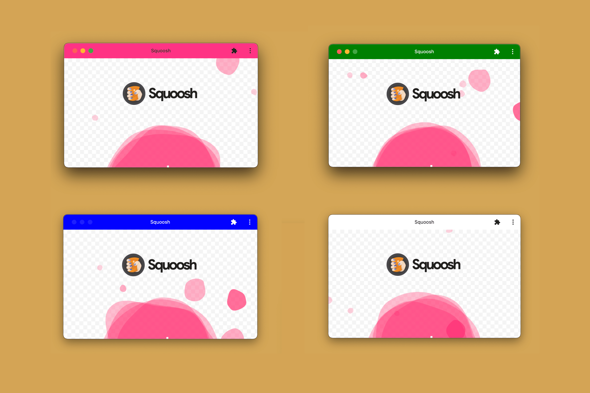
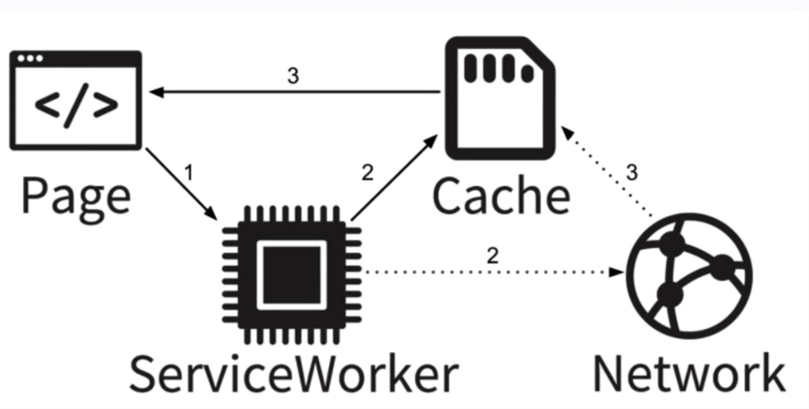

Manifiesto de la aplicación: En Android y Chrome se utiliza un archivo JSON muy sencillo, conocido como Manifiesto. Este permite especificar diversas características para controlar cómo se visualizará la App tras ser instalada.

Service workers o trabajadores de servicio: Es una especie de proxy entre el servidor o la red y el dispositivo o la aplicación. Es un JavaScript que se instala en el navegador y funciona detectando eventos. Requieren del uso de HTTPS.
HTTPS: Es necesario confirmar que funcione bajo un protocolo de seguridad. Además, para la instalación del service worker es un paso fundamental.
Icono: Necesario para mostrar el acceso directo en el cajón de aplicaciones o la pantalla de inicio del dispositivo.